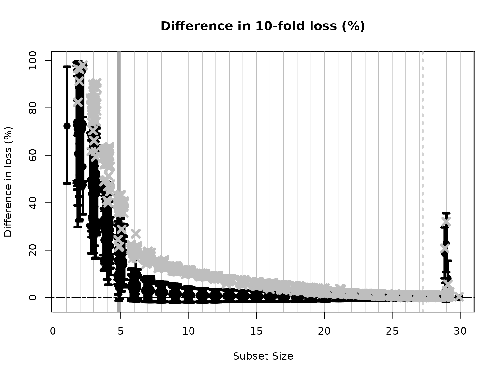

High-dimensional data
This document revisits BayesSubsets for subset search,
selection, and summarization. In particular, we consider the case where
\(p > n\) and \(p = 400\) is large. This is traditionally
infeasible for subset selection, so we describe the pre-screening tools
that we deploy in order to apply BayesSubsets.
Getting started
We begin by installing and loading the package:
# devtools::install_github("drkowal/BayesSubsets")
library(BayesSubsets)For this example, we will consider simulated data with correlated covariates \(X\) and a continuous outcome \(y \in \mathbb{R}\). Here, there are \(p=400\) covariates, only \(5\) of which are true signals.
# To reproduce:
set.seed(123)
# Simulate some data:
dat = simulate_lm(n = 200, # number of observations
p = 400, # number of predictors
p_sig = 5, # number of true signals
SNR = 1 # signal-to-noise ratio
)
# Store the data:
y = dat$y; X = dat$XFitting the regression model
The first step is to fit a Bayesian regression model. Here, we will use a linear model with horseshoe priors:
library(bayeslm)
# Fit the Bayesian regression model:
fit = bayeslm(y ~ X[,-1], # intercept already included
prior = 'horseshoe', # prior on regression coefficients
N = 10000, # MCMC samples to save
burnin = 5000, # initial samples to discard
singular = TRUE # necessary for p > n
)
#> horseshoe prior
#> fixed running time 2.01974
#> sampling time 19.7884Computing optimal linear coefficients
Given any Bayesian regression model \(M\) and any subset of covariates \(S\), we compute the optimal linear coefficients according to Bayesian decision analysis. Kowal (2021) showed that this is obtained simply by projecting the fitted values \(\hat y\) from \(M\) onto \(X_S\), i.e., the covariate matrix \(X\) restricted to the columns selected in \(S\). For an example subset \(S = \{1,3,10\}\) and squared error loss, the following code computes our optimal linear summary:
Uncertainty quantification for the linear coefficients
We may also obtain posterior uncertainty quantification for the linear coefficients that are active (nonzero) in \(S\). To do so, we project the posterior predictive distribution onto \(X_S\) draw-by-draw, which induces a posterior predictive distribution for the linear coefficients under the model \(M\)—even though \(M\) need not be linear in general.
These predictive draws are not automatically output by
bayeslm, so we run the following code to sample them. We
also compute the log-predictive densities which will later be used in
predictive cross-validation.
# Extract the posterior predictive draws and lpd:
temp = post_predict(post_y_hat = tcrossprod(fit$beta, X),
post_sigma = fit$sigma,
yy = y)
post_y_pred = temp$post_y_pred
post_lpd = temp$post_lpdNow, we can obtain posterior predictive samples of the linear coefficients in \(S\), and summarize those posteriors using 95% credible intervals.
# Posterior predictive draws of *all* coefficients:
post_beta_s = proj_posterior(post_y_pred = post_y_pred,
XX = X,
sub_x = S_ex)
dim(post_beta_s) # the coefficients outside S_ex are fixed at zero
#> [1] 10000 401
# Compute 95% credible intervals for the nonzero entries:
t(apply(post_beta_s[,S_ex], 2,
quantile, c(0.05/2, 1 - 0.05/2)))
#> 2.5% 97.5%
#> X1 -1.1040525 -0.1544037
#> X3 0.5828605 1.5262942
#> X10 -0.6296572 0.1535756Bayesian subset search
To this point, we have focused on point and interval (linear) summaries for an arbitrary yet fixed subset \(S\). However, we are often interested in searching across subsets and measuring the predictive performances. Here, we use the model \(M\) output to generate a collection of “candidate subsets” using decision analysis (Kowal, 2022a).
To make the search feasible for large \(p\), we first pre-screen to \(k \ll p\) covariates. We do this using the posterior draws of \(\beta\) under \(M\), but variations are available when \(M\) is nonlinear. Specifically, we retain the top \(k\) covariates by effect size.
# Allowable covariates:
to_consider = prescreen(fit$beta, num_to_keep = 30)
# Exclude the rest:
to_exclude = (1:ncol(X))[-to_consider]Only these \(k\) covariates are
permitted to be active. This makes the branch-and-bound algorithm
feasible. Then, as in our other vignettes, we screen to the “best”
n_best = 50 models of each size according to squared error
loss. We store these in a Boolean matrix indicators: each
row is an individual subset, while the columns indicate which variables
are included (TRUE) or excluded (FALSE).
indicators = branch_and_bound(yy = fitted(fit), # response is the fitted values
XX = X, # covariates
n_best = 50, # restrict to the "best" 15 subsets of each size
to_include = 1, # keep the intercept always
to_exclude = to_exclude # pre-screened
)
# Inspect:
indicators[1:5, 1:10]
#> X1 X2 X3 X4 X5 X6 X7 X8 X9 X10
#> force_in TRUE FALSE FALSE FALSE FALSE FALSE FALSE FALSE FALSE FALSE
#> TRUE FALSE FALSE FALSE FALSE FALSE FALSE FALSE FALSE FALSE
#> TRUE FALSE FALSE TRUE FALSE FALSE FALSE FALSE FALSE FALSE
#> TRUE FALSE FALSE FALSE FALSE TRUE FALSE FALSE FALSE FALSE
#> TRUE FALSE TRUE FALSE FALSE FALSE FALSE FALSE FALSE FALSE
# Dimensions:
dim(indicators)
#> [1] 1360 401
# Summarize the model sizes:
table(rowSums(indicators)) # note: intercept always included
#>
#> 1 2 3 4 5 6 7 8 9 10 11 12 13 14 15 16 17 18 19 20 21 22 23 24 25 26
#> 1 29 50 50 50 50 50 50 50 50 50 50 50 50 50 50 50 50 50 50 50 50 50 50 50 50
#> 27 28 29 30
#> 50 50 29 1The acceptable family of “near-optimal” subsets
From this large collection of 1360 candidate subsets, we seek to filter to the acceptable family of subsets, i.e., those “near-optimal” subsets that predict about as well as the “best” subset. These are computed based on 10-fold cross-validation, and use the out-of-sample predictive distribution from \(M\) to provide uncertainty quantification for predictive accuracy.
# Compute the acceptable family:
accept_info = accept_family(post_y_pred = post_y_pred,
post_lpd = post_lpd,
XX = X,
indicators = indicators,
yy = y,
post_y_hat = tcrossprod(fit$beta, X))
# How many subsets are in the acceptable family?
length(accept_info$all_accept)
#> [1] 1178
# These are the rows of `indicators` that belong to the acceptable family:
head(accept_info$all_accept)
#> [1] 131 132 181 182 183 184
# An example acceptable subset:
ex_accept = accept_info$all_accept[1]
which(indicators[ex_accept,])
#> X1 X3 X4 X6 X173
#> 1 3 4 6 173The plot shows how the out-of-sample predictive performance varies across subsets of different sizes, specifically relative (% change) to the “best” subset (by minimum cross-validated error; dashed gray vertical line). The x-marks are the (usual) empirical cross-validated error, while the intervals leverage the predictive distribution from \(M\) to quantify uncertainty in the out-of-sample predictive performance. While performance improves as variables are added, it is clear that several smaller subsets are highly competitive—especially when accounting for the predictive uncertainty.
Subset selection: the smallest acceptable subset
If we wish to select a single subset, a compelling representative of the acceptable family is the smallest acceptable subset. This choice favors parsimony, while its membership in the acceptable family implies that it meets a high standard for predictive accuracy. From the previous plot, we select the smallest subset for which the intervals include zero (solid gray vertical line).
# Simplest acceptable subset:
beta_hat_small = accept_info$beta_hat_small
# Which coefficients are nonzero:
S_small = which(beta_hat_small != 0)
# How many coefficients are nonzero:
length(S_small)
#> [1] 5The “best” subset by minimum cross-validation often includes many extraneous variables, which is a well-known (and undesirable) byproduct of cross-validation.
# Acceptable subset that minimizes CV error:
beta_hat_min = accept_info$beta_hat_min
# Typically much larger (and often too large...)
sum(beta_hat_min != 0)
#> [1] 27For reference, the true model size is 6. Clearly, the “best” subset is unsatisfactory.
Returning to the smallest acceptable subset, we can obtain posterior samples and credible intervals for the coefficients as before:
# Draws from the posterior predictive distribution
post_beta_small = proj_posterior(post_y_pred = post_y_pred,
XX = X,
sub_x = S_small)
# Compute 95% credible intervals for the nonzero entries:
t(apply(post_beta_small[,S_small], 2,
quantile, c(0.05/2, 1 - 0.05/2)))
#> 2.5% 97.5%
#> X1 -1.3650754 -0.3892930
#> X3 0.5819645 1.5333044
#> X4 0.7520160 1.7982194
#> X6 -1.6517656 -0.7025616
#> X173 -1.4220912 -0.4092995Variable importance from acceptable subsets
The variable importance which reports, for each variable \(j\), the proportion of acceptable subsets in which \(j\) appears. However, we must interpret this with additional caution: the pre-screening procedure eliminates certain variables from consideration for the acceptable family, and thus each of these variables will be assigned an importance value of zero. As a result, it is more informative to focus on the variables that appear in some or all acceptable subsets.
# Variable importance: proportion of *acceptable subsets* in which each variable appears
vi_e = var_imp(indicators = indicators,
all_accept = accept_info$all_accept)$vi_inc
# "Keystone covariates" that appear in *all* acceptable families:
which(vi_e == 1)
#> 1 3 4 6
#> 1 3 4 6
# Visualize:
barplot(vi_e[order(vi_e, (ncol(X):1))], # order...
horiz = TRUE,
main = paste('Variable importance for the acceptable family'))
abline(v = 1)As expected, most variables (specifically, 371) end up with a value of exactly zero, due to the pre-screening procedure. However, among the candidate variables, there is still some variability in the variable importances, which is quantified by the summary output:
# Summary stats for the nonzero VIs:
summary(vi_e[vi_e != 0])
#> Min. 1st Qu. Median Mean 3rd Qu. Max.
#> 0.1036 0.2924 0.5577 0.5755 0.8686 1.0000